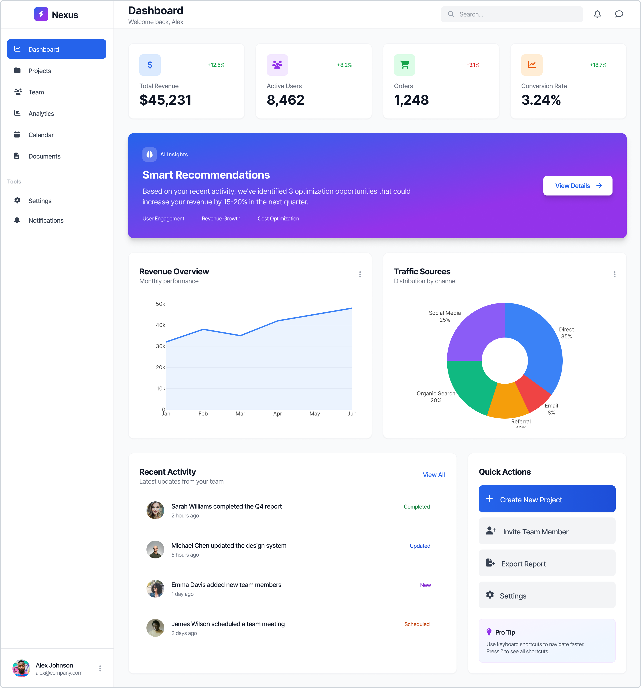
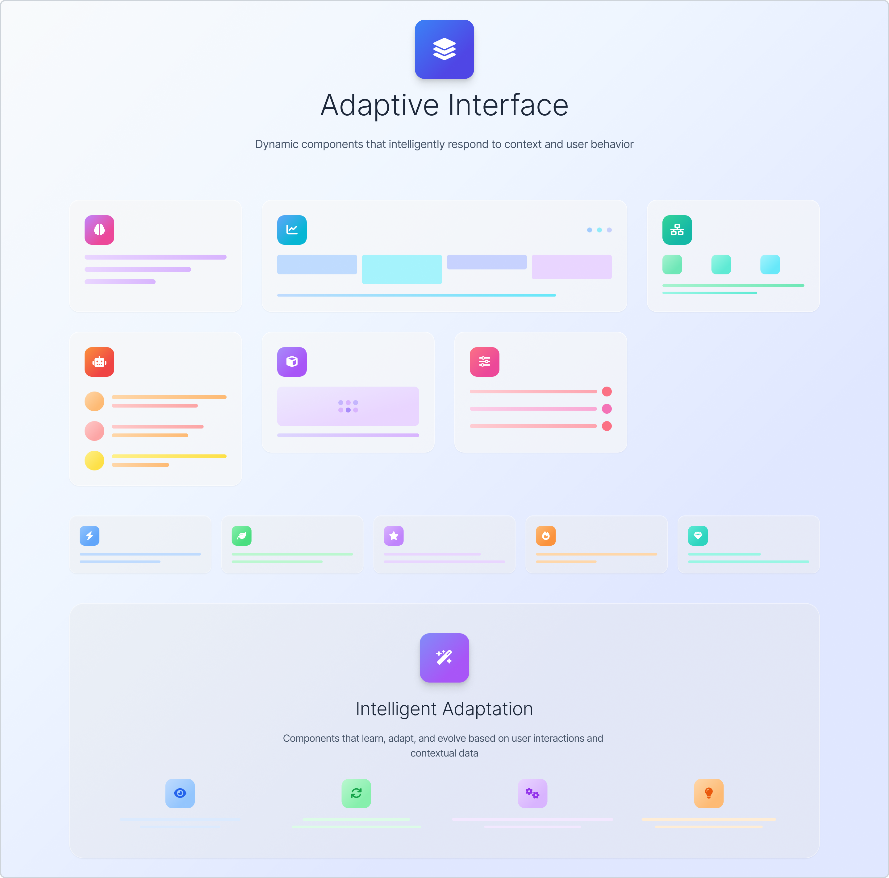

AI-powered product experiences

Overview
I supported the design of AI-driven product features across a platform, working from discovery through to prototyping. The focus was on combining strong UX and UI fundamentals with emerging approaches: conversational interfaces, adaptive UI, and system-driven experiences that respond to user context and model outputs.
My role
As part of a product and engineering team, I contributed to workshops, requirements gathering, and design decisions for AI-powered features. I prototyped interfaces that integrated language model outputs, designed for dynamic and sometimes uncertain content, and ensured consistency with existing design systems while exploring new interaction patterns.
Design approach
- Discovery & alignment — Participated in workshops with stakeholders to identify where AI could add value, map user journeys, and define success criteria. Turned complex ideas into clear, actionable design direction.
- Low and high-fidelity prototyping — Built prototypes ranging from wireframes to interactive, high-fidelity concepts. Explored how structured UI (forms, cards, lists) could sit alongside conversational or generative elements.
- Adaptive and system-driven UI — Designed for interfaces that change based on model output, user context, or system state. Considered loading states, partial results, and graceful degradation when AI responses were delayed or unavailable.
- Design system alignment — Ensured new AI-driven components fit within existing tokens, patterns, and components. Contributed to extending the design system to support generative and adaptive UI.
- Stakeholder communication — Presented design decisions, connected user needs to business goals, and explained how emerging technology shaped the experience. Shared work through clear storytelling and visual communication.

Learnings
Designing for AI-powered interfaces requires comfort with ambiguity. Model outputs vary; interfaces need to handle that variability while still feeling predictable and trustworthy. I learned to design for the "happy path" and the edge cases in parallel, and to work iteratively with engineering to understand what was feasible and what needed to be designed around.
Outcomes
Delivered prototypes and design direction that informed product development. Contributed to establishing patterns for AI-driven features and helped stakeholders understand both the opportunities and constraints of integrating LLM-powered experiences into the product.
← Previous: Conversational AI Next: Human-centred AI evaluation →